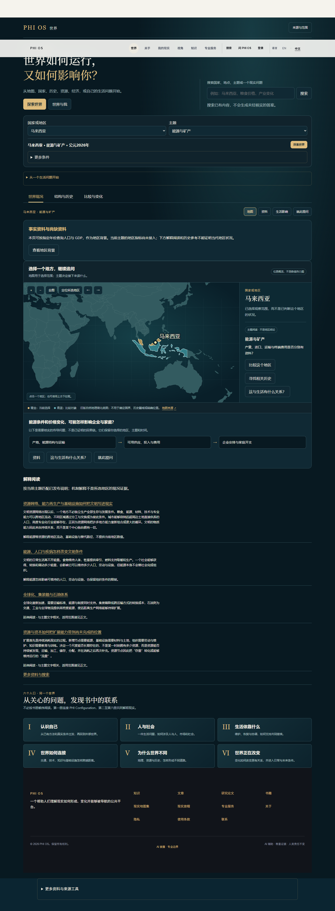
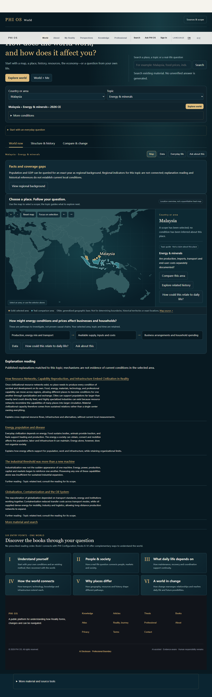
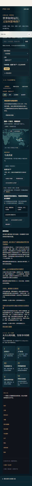
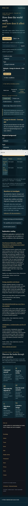
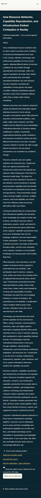
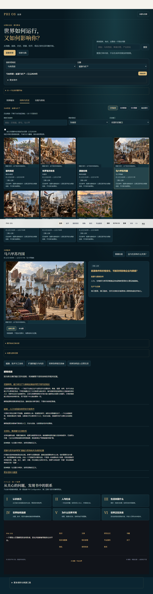

现有唯一 Master 的本地修补。交互实现与资料覆盖分别验收；没有重新接受原稿，也没有发布。
正式构建退出0；当前World五文件与产物逐字节相同。编译产物浏览器4/4，实际Worker只读拒绝测试。并行Financial改动单列，不宣称整个共享Worker当前工作区发布身份已闭环。
正式构建退出0；当前World五文件与产物逐字节相同。编译产物浏览器4/4，实际Worker只读拒绝测试。并行Financial改动单列，不宣称整个共享Worker当前工作区发布身份已闭环。
中英桌面与390手机 · 文章返回／第二地区／历史与刷新／空值与故障 · 加载与旧请求隔离／更多资料保留状态 · 九主题、资源请求和历史图片 · 15项零调用契约 · 冻结历史与版本化 successor · 保留失败
数据异常使用明确的本地模拟响应；不把它们当作 World Bank 线上数据验收。马六甲原图实际读取成功。135 项同源 JS/CSS/JSON 请求已记录，未见失败；这不等于全站资产检查。
| 主题 | 阅读示例 | 生活方向 |
|---|---|---|
| 世界如何连接 | 青铜时代的连接与崩解 季风、港口与沙漠怎样连接世界 距离、语言与记忆怎样连接社会 海洋怎样成为新的连接前沿 | 工作与机会 收入与生活成本 时间压力 |
| 能源与矿产 | 资源网络、能力再生产与基础设施如何把文明写进现实 能源、人口与疾病怎样改变文明条件 全球化、集装箱与石油体系 资源与资本如何把扩展能力带到尚未完成的位置 | 工作与机会 收入与生活成本 |
| 水与环境 | 地理、水与食物怎样塑造不同道路 走出单一路线的早期文明史 河流文明为什么没有同一种结构 生活环境、就业与收入如何把文明带进日常 | 生活环境 时间压力 安全与不确定性 |
| 食物与农业 | 地理、水与食物怎样塑造不同道路 隐藏补贴与未来提取如何制造看似便宜的扩展 资源网络、能力再生产与基础设施如何把文明写进现实 陌生人为什么能够合作：制度化信任、权威与责任 | 工作与机会 收入与生活成本 |
| 人口与城市 | 人口压缩为什么会首先变成关键节点的替代问题 文明为什么会失配，而治理往往最先落后 为什么当前增长可能正在掩盖未来收缩 资源网络、能力再生产与基础设施如何把文明写进现实 | 工作与机会 住房与空间 社会连接与支持 |
| 经济与产业 | 战间期经济危机与极端动员 人口压缩为什么会首先变成关键节点的替代问题 发展主义、国家工业化与不同结果 生活环境、就业与收入如何把文明带进日常 | 工作与机会 收入与生活成本 流动与学习机会 |
| 制度与知识 | 分发节点如何让运行真正进入更多位置 社会如何生产未来，以及这种生产为什么会失效 文明如何把知识、制度与文化压缩成可继承能力 文明结束之后，遗产如何进入人工载体继续存在 | 社会连接与支持 流动与学习机会 |
| 技术与世界变化 | 从人机共投影到时间中的方向：现实如何获得运行接口 文明为什么持续加速：AI 注意、时间压缩、生产力与未来导向如何连接 人机系统何时变成集体结构：AI 文化、价值、协调与饱和如何出现 网络文明、平台文明与数据／AI 基础设施 | 工作与机会 社会连接与支持 流动与学习机会 |
| 信息、平台与注意力 | 文明如何建立注意力基础设施：网络、承载系统与集体感知如何形成 集体注意力如何加速：叙事市场、反馈回路、算法与病毒传播如何互相放大 大规模现实如何被稳定：制度、信息、媒体与平台如何共同组织集体 人工智能可以扩大协调能力，但不能自动决定什么值得被保护 | 时间压力 流动与学习机会 |
能源／水／食物的原正文、章节及版本依据。这些是解释阅读关系，不是当地观测或全手稿覆盖。






交互可本地使用；主题地区数据仍不足。默认是明确指定年份，不支持自动最新值。比较不生成差值，缺失值不当作零。地图沿用原选择中心缩放与水平平移，未新增自由双轴拖动。
其他主题阅读关系、真实地区指标及剩余旧界面整合见 缺口清单。本地候选含已登记的静态阅读模块增量更新，之后重新检查发布边界与编译产物阅读回归。普通构建与此前冻结发布路径清单之间存在已记录的内部元数据发布策略差异；本次不授权上传原始构建目录。
HEAD 2a9b2574dff3024c46f216a87da4d947dcd93311；未提交源码以 逐文件摘要 和相关输入清单标识。
LOCAL = implemented with documented coverage gaps；BUILD = PASS_LOCAL_WORLD_BUILD_AND_COMPILED_QA；DEPLOYED = NOT_DEPLOYED_THIS_CANDIDATE；LIVE = NOT_RUN_THIS_CANDIDATE。
Provider calls / R2 writes / production writes / commit / push / deploy = 0。
world/index.html assets/css/world-experience-r2.css assets/js/pages/civilization-atlas/world-experience-r2.js assets/js/pages/world.js assets/js/pages/civilization-atlas/world-published-reading.js scripts/check-book-v-civ-atlas-r1-w16-production-freeze.mjs content/civilization-atlas/maintenance/book-v-world-ux-successor-v6.json content/civilization-atlas/maintenance/world-ux-r1-before-0.txt content/civilization-atlas/maintenance/world-ux-r1-before-1.txt content/civilization-atlas/maintenance/world-ux-r1-before-2.txt content/civilization-atlas/maintenance/world-ux-r1-before-3.txt content/civilization-atlas/maintenance/world-ux-r1-before-4.txt